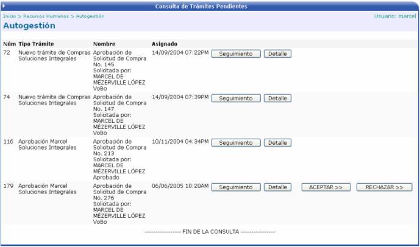
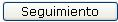
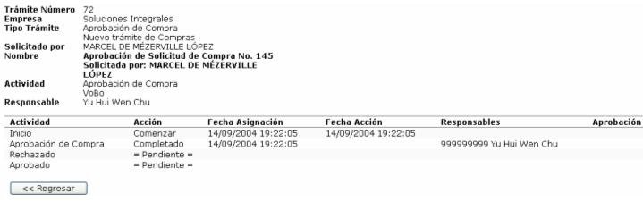
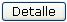
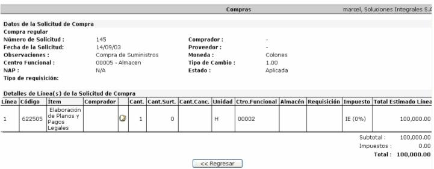

La lista que aquí se presenta corresponde a los trámites que el usuario a solicitado y aún no han sido aprobados o rechazados, por los responsables del trámite. Puede realizar dos opciones: darle seguimiento (consultar) un trámite o ver el detalle de dicho trámite.

1.

Al presionar este botón, se presenta la siguiente información de consulta de seguimiento del trámite, como lo es, el tipo de trámite, la persona que lo solicito, el responsable, etc. Esta información es de solo consulta y corresponde a todos los trámites del empleado y que no han sido aún autorizados:

2.

Al presionar este botón, se presenta la información correspondiente al trámite que se esta realizando, pudiendo este corresponder a un trámite del área financiera o de Recursos Humanos; la información que se presenta en esta pantalla dependerá de el tipo de trámite que se esta consultando.